Explorez Annecy

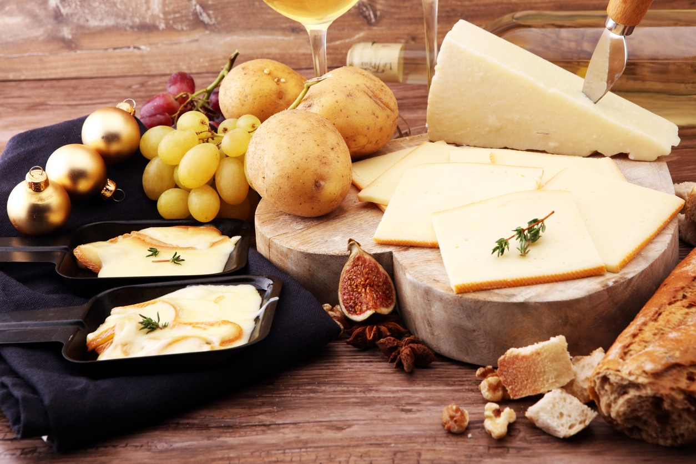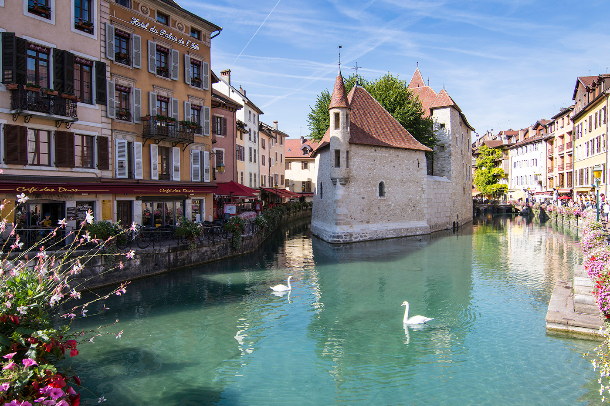
Conseils de voyage
 Meilleure période pour visiter
Meilleure période pour visiter
 Se déplacer
Se déplacer
 Coutumes locales
Coutumes locales
 Conseils de pros
Conseils de pros
Immanquable à Annecy
Se divertir
Des lieux à voir, des rues à explorer et des expériences emblématiques.
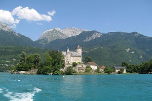
Lac d'Annecy
6 697 avis
Plan d'eau

5 000 avis
Activités
4 514 avis
Monuments & Points d'intérêt
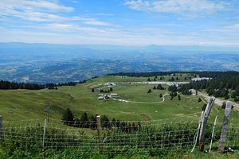
Semnoz
770 avis
Montagnes
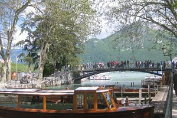
Pont des Amours
1 005 avis
Ponts, Monuments & Points d'intérêt
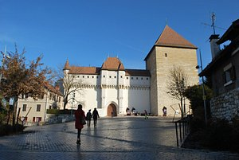
Chateau d'Annecy
757 avis
Sites historiques, Musées spécialisés
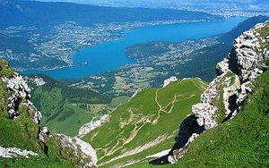
La Tournette
273 avis
Montagnes
Se reposer
Un mélange de charme, de modernité et de valeurs sûres.

1 013 avis
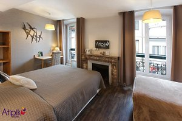
Atipik Hôtel Alexandra
1 047 avis
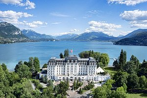
Imperial Palace
1 923 avis
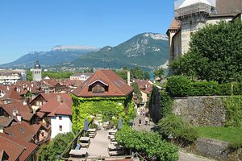
Hôtel du Château
304 avis
Se restaurer
Lieux incontournables où manger, boire et faire la fête.
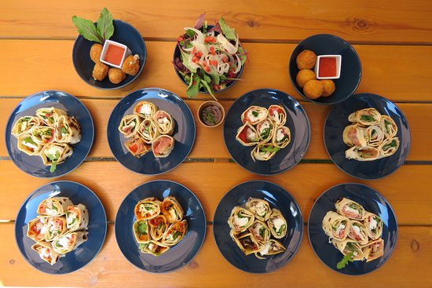
Le Semper fi
1 128 avis
€€-€€€ Italienne, Saine
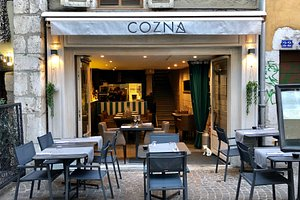
Cozna
412 avis
€€-€€€ Française, Saine

1 243 avis
€-€€ Francaise, Brunch

608 avis
€€€€ Francaise, Saine